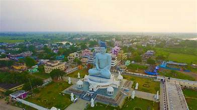
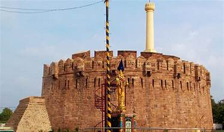
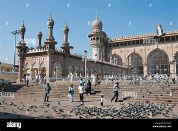
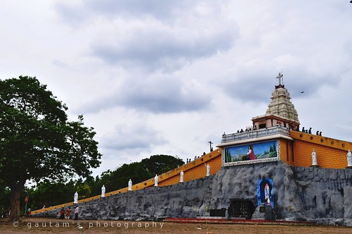
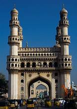
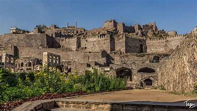

Welcome to Andhra Pradesh
Discover the rich culture, heritage, and beauty of Andhra Pradesh
Major Cities & Tourist Attractions

Visakhapatnam – Known as the 'Jewel of the East Coast', famous for its beaches, Araku Valley, and Kailasagiri.
Tirupati – Home to the famous Tirumala Venkateswara Temple, one of the most visited pilgrimage sites in India.


Vijayawada – The commercial capital, famous for Kanaka Durga Temple and Prakasam Barrage.
Amaravati – The new capital, known for its ancient Buddhist stupas and spiritual significance.


Rajahmundry – The cultural capital of Andhra Pradesh, located on the banks of the Godavari River.
Kurnool – Known for historical landmarks like Konda Reddy Fort and Belum Caves.

Beaches & Natural Beauty

Rushikonda Beach – A serene beach in Visakhapatnam, ideal for water sports and relaxation.
RK Beach – A popular spot offering stunning views of the Bay of Bengal.

Temples, Mosques & Churches

Srisailam Temple – A revered pilgrimage site dedicated to Lord Shiva.
Amaravati Stupa – An ancient Buddhist site reflecting the rich history of Buddhism in Andhra Pradesh.


Mecca Masjid – A prominent mosque showcasing Islamic architecture and heritage.
Gunadala Mary Matha Shrine – A renowned church attracting pilgrims from all over.

Historical Monuments

Charminar – A historical monument showcasing Indo-Islamic architecture.
Golkonda Fort – A magnificent fort that reflects the grandeur of ancient architecture.
